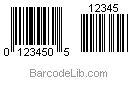

|
Our Customers
|
Barcode Reader for .NET Developer Guide
Barcode Reader for .NET Introduction
BarcodeLib.com Barcode Reader for .NET is a .NET component that can recognize linear and 2D barcode images. It can be used in:
- ASP.NET Website Appliations
- .NET Windows Forms Appliations
- .NET, C#, VB.NET Class Library Applications
- .NET Console Applications
This Package Contains:
- BarcodeLib.BarcodeReader.dll - .NET Barcode Reader Library DLL for barcode image recognition.
- demo_images - Contains several sample barcode images. You can add your own images to that folder, then run runDemo.bat to test.
- DeveloperGuide.html - Explains how to use this .NET Barcode Reader DLL.
- LicenseAgreement.pdf - End user license agreement.
- Purchase-Barcode Reader for .NET.html - Contains the link to buy Barcode Reader for .NET.
Installation requirement: Microsoft .NET Framework 2.0 or later versions should be installed firstly.
How to Start:
- Unzip downloaded package to C:\ drive.
- Add BarcodeLib.BarcodeReader.dll into your .NET project reference.
- To Test BarcodeLib barcode reader, please run "runDemo.bat" which will recognize all images under folder "demo_images". Or you may copy "demo_images" to C:\ drive. Then rename it as "images" and run "Demo.exe".
How to Read Barcode Image
Read barcode from image is a simple task. Pass your barcode image file and barcode type to BarcodeReader, and it will return barcode datas.
Using C# Code
String[] datas = BarcodeReader.read("C:/YourBarcodeImage.gif", BarcodeReader.CODE39);
Using VB.NET Code
Dim datas() As String = BarcodeReader.read("c:/YourBarcodeImage.gif", BarcodeReader.CODE39)
Optimize Barcode Reading
You can customize our .NET barcode reader to improve barcode reading speed, especially when you are scanning large image size (like 4mb per image).
- Set maxOneBarcodePerPage to true, if there is maximum one barcode per image or per page in tiff or pdf document.
a. If maxOneBarcodePerPage is true, .net barcode reader will stop scanning the barcode immediately, once detects one barcode.
b. If maxOneBarcodePerPage is false (default value), .net barcode reader will use total 5 algorithms and each will scan the whole image from 4 directions.
- Scan the partial image instead of the whole file.
a. If the barcode is always located one specified area in the image, you can set and let the library scan that area only. And it will save lots of scanning time, CPU and memory usage.
b. Please just specify the left top point and right bottom point of the area (the point X, Y values are expressed in percentage of the whole image, so image most left top point is (0%, 0%), and most right bottom point is (100%, 100%)).
C# sample code: How to scan top 20% and bottom 20% of the image.
OptimizeSetting setting = new OptimizeSetting();
setting.setMaxOneBarcodePerPage(true);
ScanArea top20 = new ScanArea(new PointF(0.0F, 0.0F), new PointF(100.0F, 20.0F));
ScanArea bottom20 = new ScanArea(new PointF(0.0F, 80.0F), new PointF(100.0F, 100.0F));
List<ScanArea> areas = new List<ScanArea>();
areas.Add(top20);
areas.Add(bottom20);
setting.setAreas(areas);
string[] results = BarcodeReader.read("c:/YourBarcodeImage.gif", BarcodeReader.CODE39, setting);
VB sample code: How to scan top 20% and bottom 20% of the image.
Dim setting As OptimizeSetting = New OptimizeSetting()
setting.setMaxOneBarcodePerPage(True)
Dim top20 As ScanArea =
New ScanArea(New Drawing.PointF(0.0F, 0.0F), New Drawing.PointF(100.0F, 20.0F))
Dim bottom20 As ScanArea =
New ScanArea(New Drawing.PointF(0.0F, 80.0F), New Drawing.PointF(100.0F, 100.0F))
Dim areas As List(Of ScanArea) = New List(Of ScanArea)
areas.Add(top20)
areas.Add(bottom20)
setting.setAreas(areas)
Dim datas() As String = BarcodeReader.read("c:/YourBarcodeImage.gif", BarcodeReader.CODE39, setting)
How to Get Supplement Barcode Data
For barcode EAN 8, EAN 13, UPC-A, UPC-E, their barcode image may contain 2 or 5 digits supplement barcode, .NET Barcode Reader will add supplement barcode data to the main barcode data.

For example, .NET barcode reader will return data as "123450512345" for above sample image. The First 7 digits "1234505" is UPCE data, and the last 5 digits "12345" is UPCE supplement data.
For UPC-E barcode, usually there are 8 digits printed on the barcode label. The first digit is UPC-E number system, valid values are 0 or 1. The
next 6 digits are UPC-E data, and the last one is checksum.
Our library will return 6 digits data and the last one checksum. Developer should use the first 6
digits as UPC-E data, according to UPC-E specification.
For the above barcode image, 0 is the number system, 123450 is the UPC-E data, and 5 is the checksum. Our library will return 1234505, plus suppliment barcode 12345.
So the final output will be 123450512345.
-
Linear Barcodes
| - Codabar |
- Code 39 / Code 39 Extension |
| - Code 128 |
- Interleaved 2 of 5 |
| - EAN-8, +2, +5 |
- EAN-13, +2, +5 |
| - UPC-A, +2, +5 |
- UPC-E, +2, +5 |
-
2D Barcodes
| - Data Matrix |
- PDF417 |
- QR Code |
|